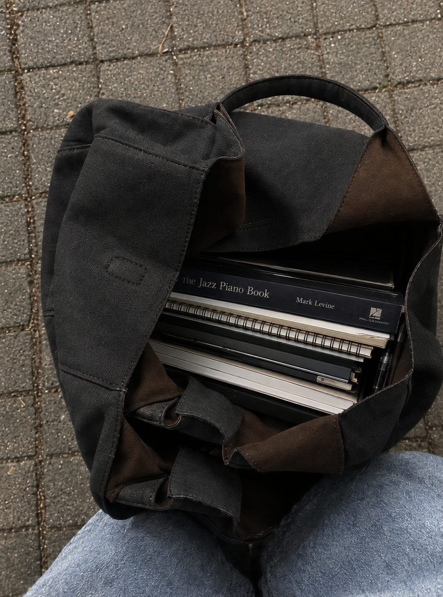

ENOCH MUSIC ACADEMY73 DAYS LEFT
73 Days Left · 2026
73일 뒤, 두 사람은
다른 12월을 보냅니다
올해가 가기 전에, 배우고 싶었던 그것.
73일01 / 07
ENOCH MUSIC ACADEMYEVERY AUTUMN
Every Autumn
매년 이맘때,
같은 말을 합니다
“내년엔 꼭.”
배우고 싶었던 악기, 불러 보고 싶었던 노래.
그 마음은 사라지지 않아요.
해마다 1월로 미뤄질 뿐입니다.
73일02 / 07
ENOCH MUSIC ACADEMYSAME DAYS, DIFFERENT DECEMBER
Same 73 Days
같은 73일,
다른 12월
시작한 사람
미룬 사람
10월
첫 레슨.
악기를 처음 잡아 본 날
'언젠가' 하며
영상만 저장
11월
연습실 가는 길이
익숙해짐
바빠서,
다음 달부터
12월
좋아하는 곡 한 소절을
끝까지
연말이니까,
내년부터
12.31
올해 시작한 게
하나 있는 사람
다시,
"내년엔 꼭"
73일03 / 07
ENOCH MUSIC ACADEMYAFTER WORK

After Work
퇴근 후의 나를,
설명하는 것 하나
누군가는 달리고, 누군가는 필름을 감아요. 그리고 누군가는 악기를 꺼냅니다.
일 말고, 내가 고른 것 하나.
73일04 / 07
ENOCH MUSIC ACADEMYSMALL, BUT STEADY
서툰 것 하나를,
곁에 두면
처음 몇 주는 티가 나지 않습니다.
그래도 하나씩 쌓이면, 12월의 나는 10월의 나와 분명히 다르거든요.
기준은 남이 아니라, 지난달의 나예요.
73일05 / 07
ENOCH MUSIC ACADEMYTHE ENOCH WAY
The ENOCH Way
퇴근 후에도,
늦지 않습니다
MON–FRI 22:00평일은 밤 10시까지 열려 있어요
SAT 10–18주말에 시작해도 됩니다
1:1입시 · 취미 · 성인 · 전문, 모든 과정
PRACTICE ROOM운영시간 내 자유로운 연습실 이용
같은 곡도, 사람마다 다르게 가르칩니다.
73일06 / 07
ENOCH MUSIC ACADEMYCONTACT
ENOCH
73일 뒤의 나에게,
한 곡을.
카카오톡 채널 · 네이버 톡톡 · 체험수업 예약 · 상담 전화 · DM
나만의 진짜 소리를 찾는 곳.
에녹실용음악학원 시흥점
경기도 시흥시 은행로 157 2층010 3949 3666
Vocal · Guitar · Drum · Bass · Piano · MIDI · 작곡
73일07 / 07